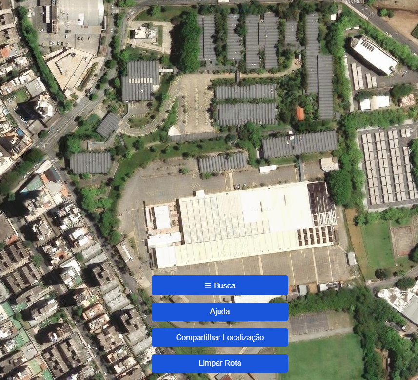
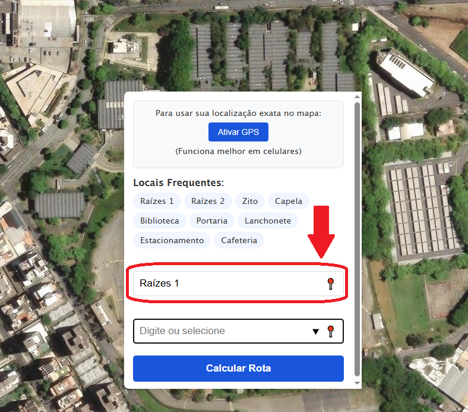
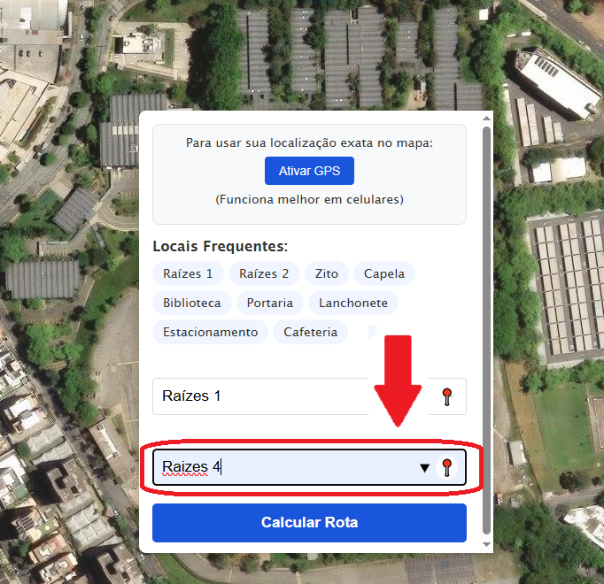
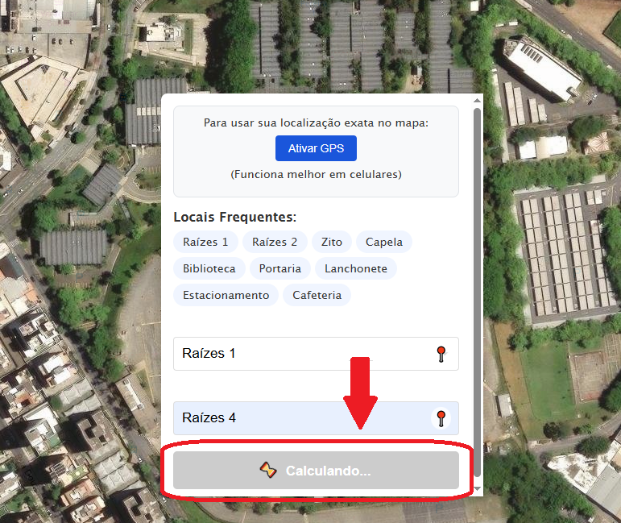
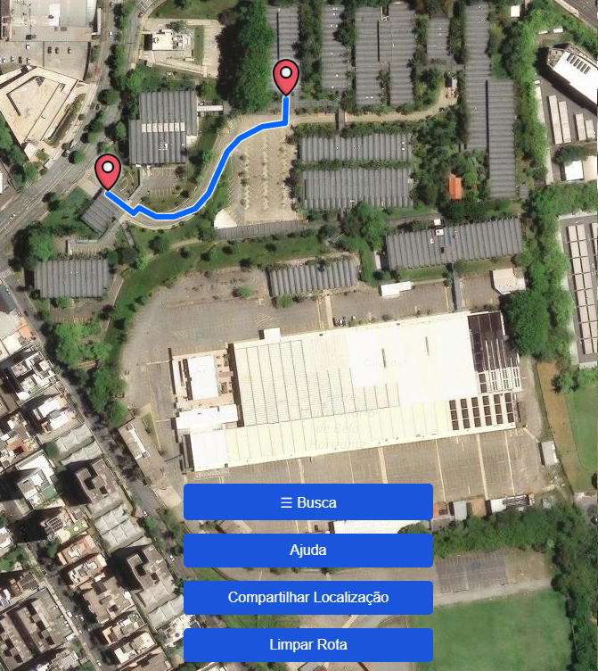

Encontre qualquer local do campus em poucos segundos.

Toque no ícone de lupa na barra de ações no centro da tela.

Digite onde você está (portaria, estacionamento…) ou use o GPS 📍.

No segundo campo, informe para onde quer ir.

Clique em Calcular Rota para ver o caminho no mapa.

A linha azul indica o caminho mais rápido a pé até o destino.
Preste atenção nas placas do campus para confirmar sua posição.
Use o botão 📍 para preencher sua localização automaticamente.
Em caso de dúvida, pergunte aos funcionários durante o trajeto.
Desenvolvido pela turma de Engenharia de Software (5º período) do UniBH, para facilitar a orientação de novos alunos no campus.
Equipe: André, Bernardo, Breno, Eduardo, Guilherme, João Victor, Laysla, Marian.